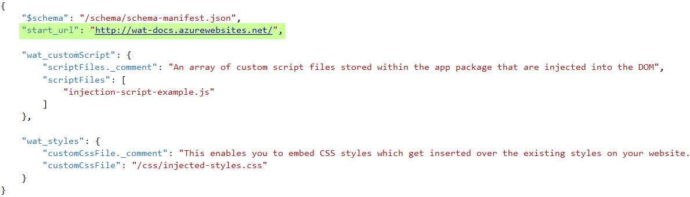
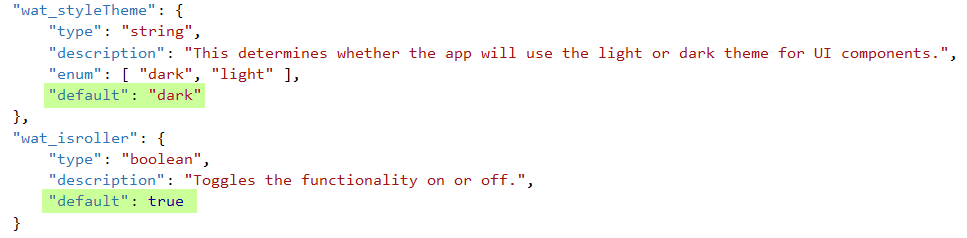
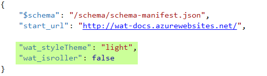
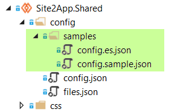

Readme
Guidelines, best practices and technical qualifications for Web App Template solutions
Guidelines, best practices and technical qualifications for Web App Template solutions
Since version 2.2 of the template the config.json file adheres to the W3C Web App manifest
format. Some required legacy properties were renamed to match the manifest format while proprietary extensions were simply
prefixed with "wat_".
For instance, the mandatory legacy "displayName" and "homeURL" properties were renamed to "name" and "start_url"
respectively. On the other hand, the "navigation" proprietary extension was renamed to "wat_navigation"
The template supports the previous format of the config.json file so if you already have a working one there is no need to
update it to the new format. However, this is the recommended approach.
Note: The template automatically detects whether the config.json file observes the new format and applies validation rules
accordingly. Mixing both approaches will result in an error.
Out of the box the tremplate provides a default config.json file with 4 properties. However, in order to have a running app
you just need to set the "start_URL" value.

The template will apply default values for all the properties defined in a manifest schema (App.Shared\schema\schema-manifest.json)
so, after including a section in the config.json you will have a default behavior without having to set anything else.

Of course you can always override the default values in the config.json.

The template provides a sample config.json which is nothing more than a configuration file that defines values for all the
properties defined in the manifest.
Also, a sample globalization config.es.json file is included containing localized strings that will override those found in
the default config.json file depending on the user's current culture. In the sample file the localized strings correspond
to the spanish culture.

The template provides a sample config.json which is nothing more than a configuration file that defines values for all the
properties defined in the manifest.
Also, a sample globalization config.es.json file is included containing localized strings that will override those found in
the default config.json file depending on the user's current culture. In the sample file the localized strings correspond
to the spanish culture.